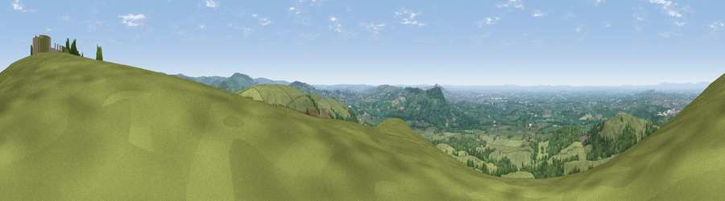

Viewpoint near Bosley
#4782 in England · top 2% of its area beats it · near BosleyWhere it is
The exact computed spot (SJ 93250 67412). Click the marker for map links.
The view, rendered

A 360° render of this exact spot computed from the terrain model, tree cover and land cover — summer colours, afternoon light, calibrated against photographs of famous viewpoints. Real trees, hedges and buildings will differ in detail.
The panorama
Grey silhouette: terrain skyline in each direction (720 bearings, Earth curvature and refraction included). Dashed green: skyline with trees (+15 m) and buildings (+8 m) as obstacles. Blue strip: how far the ground is visible on each bearing.
Where the view opens
Wedge length = distance to the farthest visible ground on that bearing (vegetation-aware). Rings at 10, 25 and 50 km.
What fills the view
67% grassland · 26% woodland · 4% built-up · 3% cropland
Angular shares of the visible panorama (visual magnitude), not map area. Landscape diversity 0.38 (0–1 Shannon).
Key numbers
More beautiful places nearby
The staircase of upgrades: each row has a higher view potential than everything closer. Driving times are estimates from straight-line distance, calibrated against real road routing — check an actual route before setting out.
| Place | Direction | Drive | Score |
|---|---|---|---|
| Croker Hill | NNE · 0 km | ~1 min | 72.7 |
| Viewpoint near Timbersbrook | SW · 5 km | ~11 min | 74.4 |
| Viewpoint near Mow Cop | SW · 12 km | ~23 min | 78.9 |
| Viewpoint near Mow Cop | SW · 13 km | ~23 min | 80.2 |
| Viewpoint near Harthill | WSW · 44 km | ~64 min | 80.5 |
| White Brow | NNW · 52 km | ~74 min | 82.9 |
| Viewpoint near Little Wenlock | SSW · 66 km | ~89 min | 84.2 |
| The Wrekin | SSW · 67 km | ~90 min | 85.0 |
53.20374, -2.10251 · source: screening · position refined by local search. Computed location — check access rights before visiting.